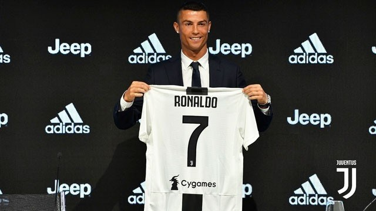
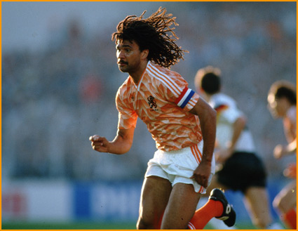
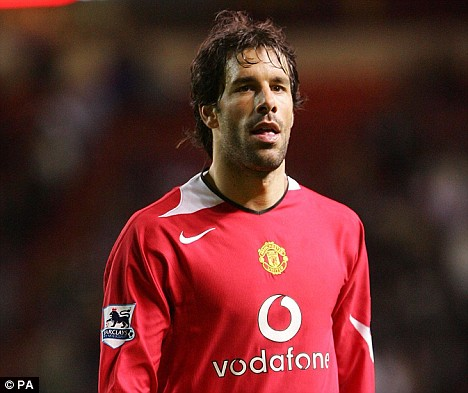

my idol
|
คริสเตียโน โรนัลโด  |
ข้อมูลส่วนบุคคล ชื่อเต็ม กริชตียานู รูนัลดู ดุช ซังตุช อาไวรู วันเกิด 5 กุมภาพันธ์ ค.ศ. 1985 (33 ปี) สถานที่เกิด ฟุงชาล, มาเดรา, โปรตุเกส ส่วนสูง 1.85 เมตร (6 ฟุต 1 นิ้ว) ตำแหน่ง กองหน้า |
ข้อมูลส่วนบุคคล ลิโอเนล อันเดรส เมสซิ กูซิตินิ 24 มิถุนายน ค.ศ. 1987 (31 ปี) โรซาริโอ อาร์เจนตินา ส่วนสูง 1.70 เมตร ตำแหน่ง กองหน้า ข้อมูลสโมสร สโมสรปัจจุบัน บาร์เซโลนา หมายเลข 10 | |
ข้อมูลส่วนบุคคล ชื่อเต็ม โรนัลดู ลูอีส นาซารีอู จี ลีมา วันเกิด 22 กันยายน ค.ศ. 1976 (42 ปี) สถานที่เกิด รีโอเดจาเนโร, ประเทศบราซิล ิ ส่วนสูง 1.83 เมตร (6 ฟุต 0.0 นิ้ว) ตำแหน่ง กองหน้าตัวเป้า หมายเลข 9 | |
|
Ruud Gullit  |
ข้อมูลส่วนบุคคล ชื่อเต็ม รือดี ดิล วันเกิด 1 กันยายน ค.ศ. 1962 (56 ปี) สถานที่เกิด อัมสเตอร์ดัม, เนเธอร์แลนด์ ส่วนสูง 1.91 เมตร (6 ฟุต 3 นิ้ว) ตำแหน่ง กองหน้า, กองกลาง, กองหลัง |
|
รืด ฟัน นิสเติลโรย  |
ข้อมูลส่วนบุคคล ชื่อเต็ม รึตเคอรึส โยฮันเนิส มาร์ตีนึส ฟัน นิสเติลโรย วันเกิด 1 กรกฎาคม ค.ศ. 1976 (42 ปี) สถานที่เกิด โอสส์, นอร์ทบราแบนต์, เนเธอร์แลนด์ ส่วนสูง 1.88 เมตร (6 ฟุต 2 นิ้ว) ตำแหน่ง กองหน้าตัวเป้า |